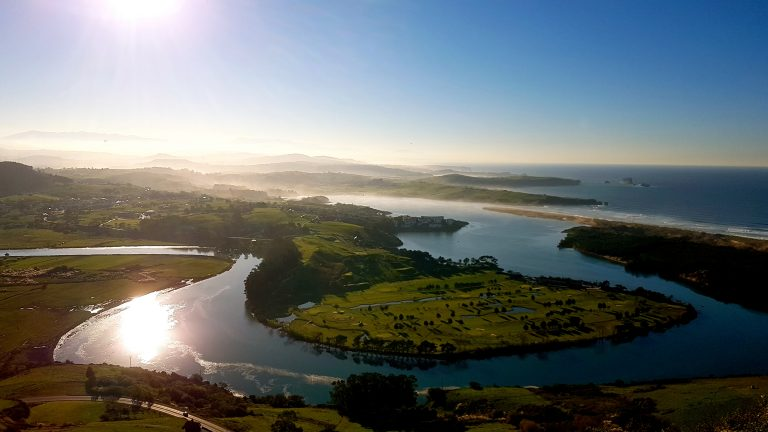

<table border="2" bgcolor="grey" table width="60%" table height="60%">
	<tr>
	<h2>
		<td>Picota</td>
	</h2>
		<td>  </td>
	</tr>
	<tr>
		<td>
			El Monte La Picota se encuentra en Mortera, en el municipio de Piélagos.
			Su altitud es de 240 metros y tiene una gran visibilidad. 
			Desde su cima podemos ver el Parque Natural de las Dunas de Liencres.
		</td>
	</tr>
</table>
<h2>
	<a href="Tabla.html"> Tabla</a>
	<a href="Mortera.html"> Mortera</a>
</h2>